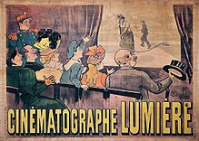

(Los hermanos Lumière inventaron el primer proyector cinematográfico.)
Con la instauración de las ciudades como eje de las sociedades, surgió un público y una cultura de masas.
Además de este contexto social, la ciencia estaba experimentando con nuevos materiales a través de las nuevas ramas de la química moderna.
Entre los avances tecnológicos que propiciaron el invento del cine están las invenciones derivadas de la electricidad.
Además, fueron indispensables las experiencias previas en la captura fotográfica, como los daguerrotipos y las primeras fotografías.
El propio Thomas Alva Edisones estuvo a punto de patentar el cine, cuando en su laboratorio William Dickson inventó el kinetoscopio. Este artefacto fue precursor de los primeros proyectores y sirvió de base a los inventores del cine.
El cinematógrafo
Los hijos del fotógrafo francés Antoine Lumière, conocidos como los hermanos Lumière(img 1), inventaron el primer proyector cinematográfico (cinematógrafo,(img 1) el cual fue patentado el 13 de febrero de 1895. Ese mismo año, los Lumière rodaron su primera película, La sortie des ouvriers des usines Lumière à Lyon Monplaisir(Salida de los obreros de la fábrica Lumière en Lyon Monplaisir). Fue presentada el 22 de marzo de 1895, tres días después del rodaje, en una sesión de la Société d'Encouragement à l'Industrie Nacional en París
Tras diversas presentaciones en sociedades científicas, en la Universidad de la Sorbona, en Bruselas y otros lugares, los Lumière decidieron hacer una exhibición comercial de sus películas. Finalmente, lo celebraron en el Salon indien du Grand Café, un sótano en el número 14 del Boulevard des Capucines, el 28 de diciembre de 1895. Se proyectaron, además de Salida de la fábrica Lumière, otras películas como Llegada de un tren a la estación de la Ciotat y El regador regado(referenciado en la imagen 2), en la que aparece el jardinero Jean-François Clerc. Así, con este catálogo, el cine comenzó su historia a modo de documental, como testigo objetivo de la vida cotidiana.

(img 2)
(El primer cartel de cine de la historia, el de la película El regador regado de los hermanos Lumière (1895))
Aunque los hermanos dijeron «el cine es una invención sin ningún futuro», aprovecharon todo lo que el nuevo invento les ofreció para montar un negocio rentable. Los Lumière enviaban un cinematógrafo y un operador donde fuera requerido, por ejemplo, a la coronación de Nicolás II de Rusia.
Su posición económica y el interés que mostraban hacia la ciencia les hizo menospreciar las posibilidades comerciales de su invento, por lo que finalmente abandonaron la producción cinematográfica.